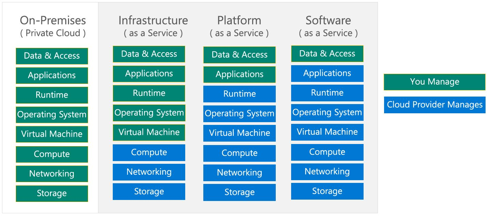
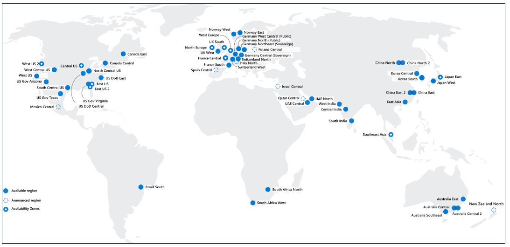
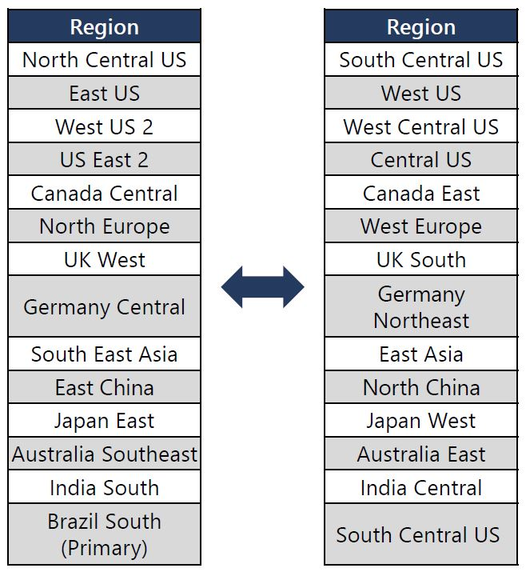
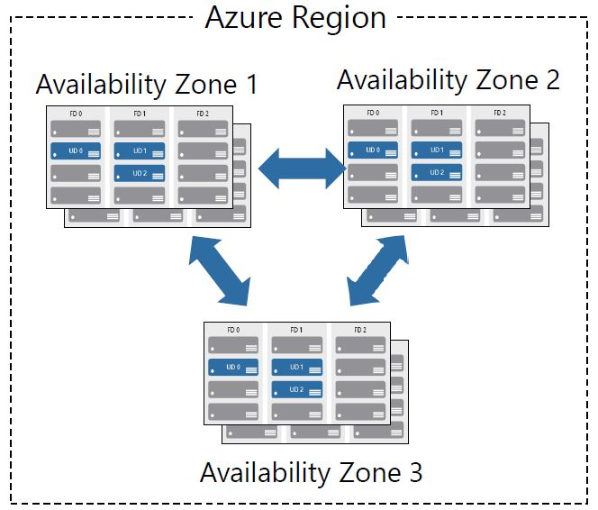
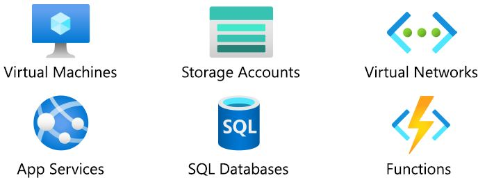
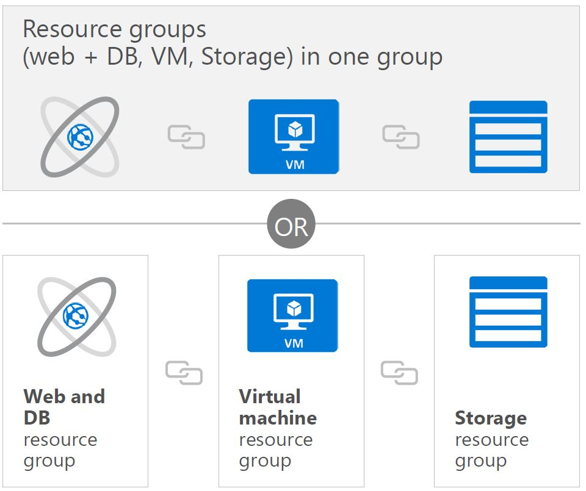
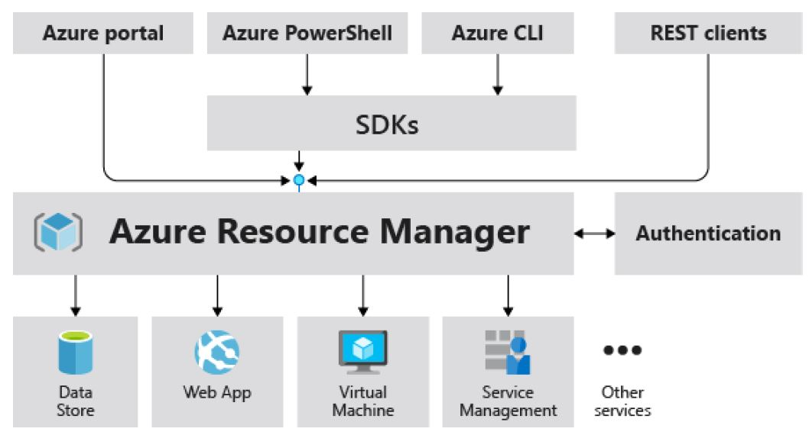
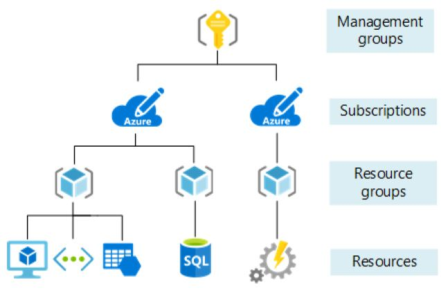
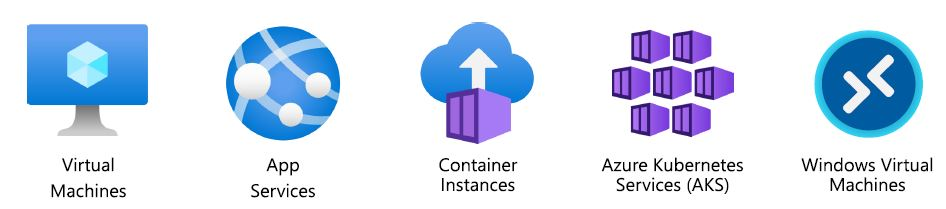

Azure : Les fondamentaux
| Modules | % |
|---|---|
| Les concepts du cloud | 20-25% |
| Les services Azure de base | 15-20% |
| Les solutions de base et les outils de gestion | 10-15% |
| La sécurité générale et la sécurité du réseau | 0-15% |
| L'identité, la gouvernance, la confidentialité et la conformité | 20-25% |
| La gestion des coûts Azure et les accords de niveau de service | 10-15% |
- Ce Tuto est une préparation au certification AZ-900 Microsoft Azure Fundamentals.
- Les % indiquent le poids relatif de chaque module dans l'examen.
- Plus le pourcentage est élevé, plus vous êtes susceptible de voir des questions dans ce domaine.
Module 1 : Les concepts du cloud
Module 01 : Les grandes lignes
Les notions suivantes seront expliquées
- Les Modèles du cloud
- Public, Private et cloud Hybrid.
- Choisir la solution à son utilisation
- Avantages et considérations du cloud
- Avantages du Cloud
- Considérations sur le cloud
- Les différents services Cloud
- IaaS, PaaS, and SaaS
- Partager la responsabilité
1.1 Les Modèles du cloud
Le Cloud computing est l'utilisation de services informatiques via le réseau, permettant une innovation plus rapide, des ressources flexibles et des économies d'échelle.

1.1.1 Définir le cloud computing
- Propriété de services cloud ou d'hébergement fournisseur.
- Fournit des ressources et des services aux plusieurs organisations et utilisateurs.
- Accessible via un réseau sécurisé connexion (généralement sur le l'Internet).
1.1.2 Définir le Cloud Public.
- Propriété de services cloud ou de l'hébergeur.
- Fournit des ressources et des services aux plusieurs organisations et utilisateurs.
- Accessible via un réseau sécurisé connexion (généralement sur le l'Internet).

1.1.3 Décrire le cloud privé
- Les organisations créent un environnement cloud dans leur centre de données.
- L'organisation est responsable de l'exploitation des services qu'ils fournissent.
- Ne donne pas accès aux utilisateurs en dehors de l'organisation.
1.1.4 Décrire le cloud hybride
- Combine les clouds publics et privés pour permettre aux applications de s'exécuter dans le plus grand nombre
emplacement approprié.

1.1.5 Comparez et contrastez les trois différents modèles de cloud
| Service Cloud | Description |
|---|---|
| Public | Pas de dépenses en capital à mettre à l'échelle. |
| Les applications peuvent être rapidement provisionnées et déprovisionnées. | |
| Les organisations ne paient que pour ce qu'elles utilisent. | |
| Privé | Le matériel doit être acheté pour le démarrage et la maintenance. |
| Les applications peuvent être rapidement provisionnées et déprovisionnées. | |
| Les organisations ne paient que pour ce qu'elles utilisent. | |
| Hybride | Fournit le plus de flexibilité. |
| Les organisations décident où deployer ses applications. | |
| Les organisations contrôlent la sécurité, la conformité ou les exigences légales |
1.2 Avantages et considérations du cloud
1.2.1 Identifier les avantages du cloud computing comme la haute disponiblité , l'évolutivité (la scalabilité) , elesticit, agilité et reprise après sinistre.
- Haute disponibilité (99,99% du temps )
- Scalabilité
- Portée mondiale ( Global reach)
- Agilité
- Tolérance aux pannes
- Elasticité
- Considérations relatives aux coûts prévisionnels
1.2.2 Identifier la différence entre CapEx et OpEx.
-
CapEx : dépenses d'investissement ( Capital Expenditure).
- Les dépenses initiales d'argent sur l'infrastructure physique.
- Les coûts de CapEx ont une valeur qui diminue avec le temps.
-
OpEx : dépenses d'exploitation ( Operational Expenditure).
- Les dépenses et la facturation de services ou de produits selon les besoins
- Les dépenses sont déduites la même année.
1.2.3 Décrire le modèle basé sur la consommation
- Les fournisseurs de service cloud propose un service basé sur la consommation. Ceci dit, ll'utilisateur final paie seulement pour la resource utilisée.
- Bonne méthode pour prédir le cost
- Les prix des ressources et des services individuels sont fournis
- La facturation est basée sur l'utilisation réelle
1.3 Les différents services Cloud
1.3.1 Infrastructure-as-a-Service (IaaS)
- Construction d'une infrastructure informatique pay-as-you-go en louant des serveurs, des machines virtuelles, du stockage,
réseaux et systèmes d'exploitation d'un fournisseur de cloud.

1.3.2 Platform-as-a-Service (PaaS)
- Fournit un environnement pour créer, tester et déployer des applications ; sans pour autant
en se concentrant sur la gestion de l'infrastructure sous-jacente.

1.3.3 Software-as-a-Service (SaaS)
- Les utilisateurs se connectent et utilisent des applications basées sur le cloud via internet. Par exemple : Microsoft Office 365 messagerie et calendriers

1.3.4 Identifier un type de service en fonction d'un cas d'utilisation
- Comparaisons des services Cloud:
| Iaas | PaaS | Saas |
|---|---|---|
| Le service cloud le plus flexible | Se concentrer sur le developpement des applications | Modèle pay-as-you-go |
| L'utilisateur configure et gére le hardware pour son application. | La gestion de la plateforme est géré par le fournisseur du cloud. | Les utilisateurs paient l'utilisation du logiciel via un abonnement universel |
1.3.5 Décrire le modèle de responsabilité partagée

1.3.6 Serverless computing (L'informatique sans serveur)
- Azure Functions:est le code qui exécute votre service et non le plate-forme ou infrastructure sous-jacente. Ça crée infrastructure basée sur un événement
- Azure Logic Apps:est un service cloud qui vous aide automatiser et orchestrer les tâches, les processus métier et workflows lorsque vous devez intégrer des applications, des données, des systèmes, Et services
Note
Avec Serverless computing, le fournisseur de services cloud provisionne, dimensionne et gère automatiquement l'infrastructure requise pour exécuter le code.
Module 2 : Les services Azure de base
2.1 : Composants architecturaux Azure
2.1.1 : Régions et zones de disponibilité
Régions
Azure propose des offres de régions plus globales que n'importe quel autre fournisseur cloud avec plus de 60 régions dans plus que 140 pays. 
- Les régions sont composées d'un ou plusieurs datacenters proches.
- Cela Fournit flexibilité et évolutivité pour réduire la latence des clients.
- Cela préserve la résidence de la Data grâce à une offre de conformité complète.
Régions Pairs
- Au moins 400 km de séparation entre paires de régions.
- Réplications automatique de certains services.
- Reprise prioritaire de la région en cas de panne.
- Les mises à jour sont déployée séquentiellement pour minimiser les temps d'arrêt 
- Lien web: https://aka.ms/PairedRegions
Zones de disponibilité
- Fournir une protection contre les temps d'arrêt dus à défaillance du centre de données.
- Datacenters physiquement séparés au sein de la même région.
- Chaque Datacenter est équipé de son propre système d'alimentation, refroidissement et réseau.
- Connecté par un réseau fibre optique privé. 
2.1.2 : Abonnements et groupes de ressources
Les Ressources Azure
Les ressources Azure sont des composants tels que le stockage, les machines virtuelles et les réseaux qui sont disponibles pour créer des solutions cloud. 
Groupes de ressources
Un groupe de ressources est un conteneur à gérer et regrouper les ressources en une seule unité.
- Les ressources ne peuvent exister que dans une seule ressource grouper.
- Les ressources peuvent être dans des régions différentes.
- Les ressources peuvent être déplacées vers un autre groupe de ressources
- Une application peut utiliser plusieurs groupes de ressource 
Azure Resource Manager
- il fournit un couche de gestion qui permet de créer, mettre à jour et supprimer des ressources dans votre abonnement Azure. 
Les Abonnements Azure
Un abonnement Azure offre une authentification et autorisation d'accès au compte Azure.
- Limite de facturation : générer une facturation distincte rapports et factures pour chaque abonnement.
- Périmètre de contrôle d'accès : gérer et contrôler l'accès aux ressources que les utilisateurs peuvent mise à disposition avec des abonnements spécifiques.

- Exercice :
- Connecte-toi à https://portal.azure.com
- découvre la pae d'acceuil
- Trouves tous les services et tout ce qui est disponible.
Gestionnaire des groupes:
- Management groups peut inclure plusieurs abonnements Azure
- Les abonnements héritent les conditions appliquées au management groupes
- 10 000 Management groups peuvent être supportés dans un répertoire unique. 
2.2 : Ressources Azure de base
Les avantages et l'utilisation de :
- Macines virtuelles, Azure App Services, Instances de containeur Azure (ACI), Azure Kubernetes services ( AKS) et Windows Virtual Desktop.
- Réseau Virtuel, Passerelel VPN, Virtual network peering et ExpressRoute.
- Container (Blob) Stockage, Disk Storage, Azure Database pour MySQL, Azure DB pour PostgreSQK, SQL Managed instance.
- Marketplace Azure.
2.2.1 : Calcul
- Azure Compute est un service informatique à la demande qui fournit des ressources telles que les disques, les processeurs, la mémoire, la mise en réseau et les systèmes d'exploitation. 
MAchines virtuelles Azure
Les machines virtuelles Azure (VM) sont des émulations logicielles d'ordinateurs physiques - Inclut le processeur virtuel, la mémoire, le stockage et la mise en réseau. - Offre IaaS qui offre un contrôle total et personnalisation.
- Exercice :
- Créer une machine virtuelle sur Azure Portal.
- se connecter à la VM
- installer le rôle serveur web et tester.
Azure App Services
Azure App Services est une plateforme entièrement gérée pour créer,déployer et mettre à l'échelle rapidement des applications Web et des API. - il fonctionne avec .Net, NetC Core, Node.js, Java, Python ou php - Offre PaaS avec performances, sécurité et les exigences de conformité.
-
Exercice :
- Créer une application web en utilisant une image DOcker.
- Tester l'application web.
Instances de containeur Azure
- Les conteneurs Azure sont un environnement virtualisé léger qui ne nécessite pas gestion du système d'exploitation et peut répondre aux changements à la demande.
- Instances de conteneur Azure: Offre Paas qui exécute des conteneurs Azure sans avoir besoin des VMs ou autres services.
- Service Kubernetes Azure: Un service d'orchestration pour des conteneurs avec architectures distribuée.
- Exercice :
- Créer une instance de conteneur
- Deployer et tester le conteneur.
Windows Virtuel Desktop
Windows Virtual Desktop est une virtualisation de bureau et d'application qui tourne dans le cloud. - Créer un environnement de virtualisation de postes de travail complet sans avoir à exécuter des serveurs de passerelle supplémentaires. - Publier des pools d'hôtes illimités pour accueillir divers charges de travail. - Réduire les coûts avec des ressources multi-sessions regroupées
2.2.2 : Réseau
Les service de réseau Azure.
Réseau virtuel Azure (VNet)
Permet les ressources Azure de se communiquer entre eux, avec internet et le réseau local.
Passerelle réseau privé virtuel (VPN)
il est utilisé pour envoyer des trafique encrypté entre le réseau virtuel de Azure et le réseau local via Internet.
Express Route Azure
étend le réseau local dans Azure via une connexion privée facilitée par un fournisseur de connectivité
Exercice:
- Créer un réseau virtuel.
- Créer deux machines virtuelles
- tester la connection entre les VMs.
2.2.3 : Stockage
Les services de stackage Azure :